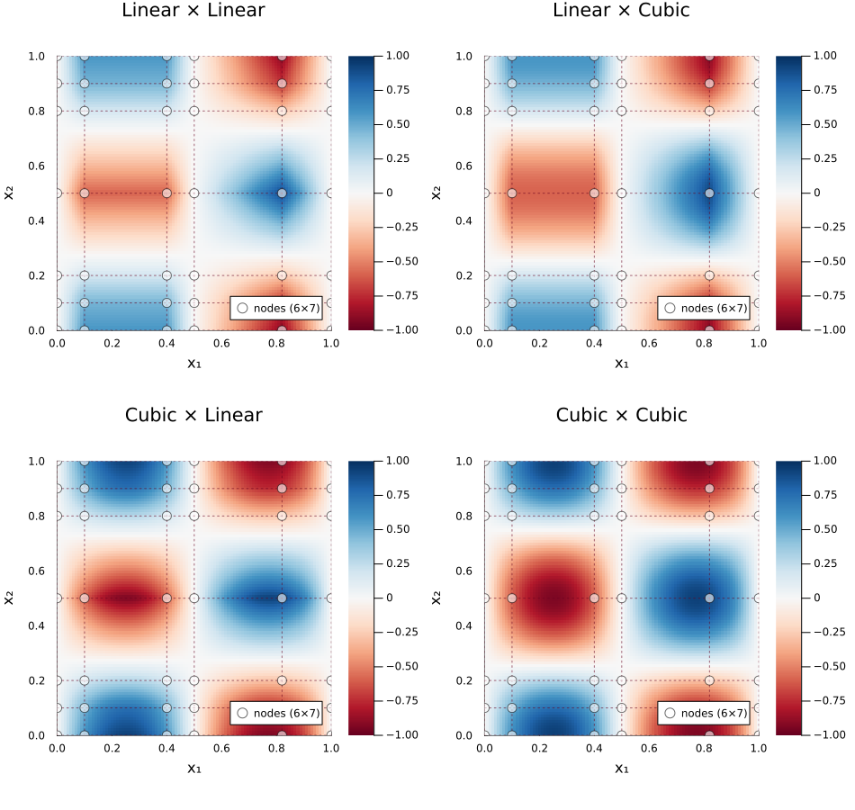

Unified API: interp / interp!
interp is a unified entry point for N-dimensional interpolation with per-axis method control.
using FastInterpolations
x = range(0.0, 2pi, 50)
y = range(0.0, 1.0, 30)
data = [sin(xi) * cos(yj) for xi in x, yj in y]Homogeneous Methods
When all axes use the same method, interp delegates to the existing optimized type. No performance penalty — identical to calling cubic_interp, linear_interp, etc. directly.
# These are equivalent:
itp1 = cubic_interp((x, y), data)
itp2 = interp((x, y), data; method=CubicInterp())
itp1((1.0, 0.5)) ≈ itp2((1.0, 0.5))A scalar method is broadcast to all axes.
Heterogeneous Methods
Specify a tuple to use different methods per axis:
itp = interp((x, y), data; method=(CubicInterp(), LinearInterp()))
itp((1.0, 0.5))All existing keywords (extrap, search, deriv, hint) work the same way — pass a scalar to broadcast or a tuple for per-axis control.
z = range(0.0, 5.0, 20)
data3d = [sin(xi) * cos(yj) * exp(-zk) for xi in x, yj in y, zk in z]
itp = interp((x, y, z), data3d;
method = (CubicInterp(bc=PeriodicBC()), QuadraticInterp(), LinearInterp()),
extrap = (WrapExtrap(), ClampExtrap(), NoExtrap()))
itp((1.0, 0.5, 2.0))GridIdx: Fast Axis Slicing
GridIdx(k) fixes an axis at its k-th grid point and interpolates only the remaining axes. Works with any interpolant and any method — no special construction needed.
For example, to interpolate on the (x, z) slice at y[15], you might write y[15] as the coordinate. GridIdx(15) gives the same result but much faster — it slices the data first and skips one-shot construction (tridiagonal solve, etc.) on the fixed axis:
# Both interpolate (x, z) at the y=y[15] slice — same result:
val_full = interp((x, y, z), data3d, (1.5, y[15], 3.2); method=CubicInterp()) # full 3D construction: slow
val_fast = interp((x, y, z), data3d, (1.5, GridIdx(15), 3.2); method=CubicInterp()) # 2D construction only: ~224× faster
val_full ≈ val_fastMultiple axes can be sliced — each one further reduces the dimension:
# Fix y and z, interpolate x only (1D construction: ~6200× faster than full 3D)
interp((x, y, z), data3d, (1.5, GridIdx(15), GridIdx(5)); method=CubicInterp())GridIdx also works on pre-built interpolants and with gradient / hessian / laplacian:
itp = cubic_interp((x, y), data)
itp((0.5, GridIdx(10))) # eval at grid point
gradient(itp, (0.5, GridIdx(10))) # full (df/dx, df/dy)Batch queries with GridIdx work through the standard interp!:
output = zeros(5)
xq = collect(range(0.5, 5.0, 5))
interp!(output, (x, y), data, (xq, GridIdx(10)); method=CubicInterp())NoInterp: Axes That Aren't Meant to Be Interpolated
While GridIdx is a query-time optimization (you can always use a plain coordinate instead), NoInterp() is a stronger, build-time declaration: this axis is inherently discrete and interpolation on it is undefined. The axis is excluded from precomputation entirely — no tridiagonal solve, no derivative storage, smaller memory footprint.
Typical use cases: ensemble runs, parameter scans, time snapshots, species indices — axes that index independent datasets rather than continuous coordinates. NoInterp axes must always be queried with GridIdx(k):
# pressure(radius, angle, run_id) — 200 independent simulation runs
# run_id is not a physical coordinate; interpolating between runs is meaningless
radius = range(0.0, 10.0, 100)
angle = range(0.0, 2pi, 60)
run_id = 1:200
pressure = randn(100, 60, 200)
# `check=false` skips the endpoint-match validation for this illustrative
# random data (a real pressure(r, θ) field would have matching θ endpoints).
itp = interp((radius, angle, run_id), pressure;
method = (CubicInterp(), CubicInterp(bc=PeriodicBC(check=false)), NoInterp()))
# Query run #42 at (r=3.5, θ=1.2) — only 2D interpolation is performed
itp((3.5, 1.2, GridIdx(42)))NoInterp Derivatives
Derivatives on NoInterp axes return zero (the axis has no spatial interpolation):
itp = interp((x, y), data; method=(CubicInterp(), NoInterp()))
gradient(itp, (0.5, GridIdx(10))) # → (df/dx, 0.0)
laplacian(itp, (0.5, GridIdx(10))) # → d²f/dx²Available Methods
| Method | Description | Derivative Order |
|---|---|---|
CubicInterp(; bc=CubicFit()) | C2 cubic spline | Up to 3rd |
QuadraticInterp(; bc=...) | C1 quadratic spline | Up to 2nd |
LinearInterp() | Piecewise linear | 1st (2nd+ = 0) |
ConstantInterp(; side=NearestSide()) | Step function | Always 0 |
NoInterp() | Discrete axis — index-based, no interpolation | N/A |
Visual Comparison
Per-axis method mixing on a 6x7 non-uniform grid for $f(x,y) = \sin(2\pi x)\cos(2\pi y)$:

Linear x Linear (top-left) shows faceted cells. Adding cubic smoothing per axis progressively improves the result — Cubic x Cubic (bottom-right) captures the extrema accurately.